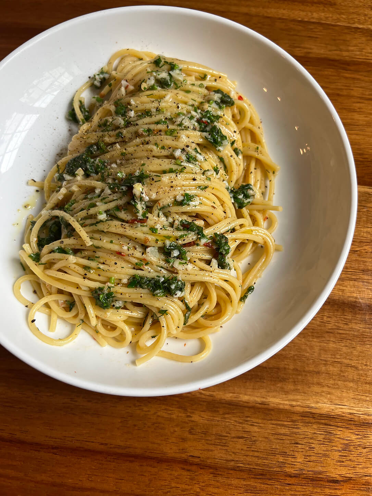

Butter and Anchovy Spaghetti

The Ingredients
- Kosher Salt and Black Pepper, freshly ground
- 8 to 12 Anchovy Fillets, depending on how you like it
- 340 grams, spaghetti
- 1 tsp., fresh lemon juice, plus zest of 1 lemon
- 1 tsp, dried oregano
- 115 grams, unsalted butter soften at room temperature
Let's make the pasta
- Put on a large pot to boil. As its coming up to temperature, take a chef's knife, and with the side, crush all of the anchovy filets on a cutting board into a paste. Add the the paste to the softened butter, and whisk together in a bowl until incorporated and the butter is smooth.
- When the water begins to boil, add a generous amount of salt, and add the pasta. Cook until al dente.
- In a saucepan that's preheated, add drained pasta, a bit of the pasta water, and the butter. Take a kitchen spoon and begin, with circular motions, "creaming the pasta."
- Once the liquid has begun to thicken, add the lemon juice and zest. Continue to cream for a little longer
- Plate up the pasta, sprinkle some oregano and freshly ground pepper. Enjoy.
Return to Recipes